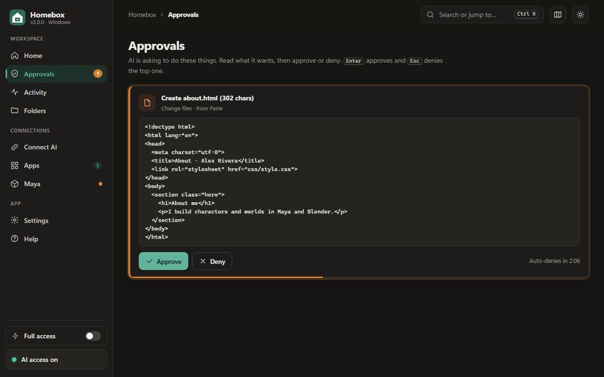

Features
Homebox is a small Windows app plus a browser extension. Together they turn any AI chat into an assistant that can actually do the work, inside limits you set.

Control and safety
Sandbox folder
Pick one project folder. The AI cannot read or write anywhere else, and Homebox refuses risky choices such as your whole user folder or Windows folders.
Approvals
Each change shows the exact file content or code first. Approve with Enter, deny with Esc. Anything you ignore is denied after five minutes.
Full access
Trust the task? Turn on Full access and the AI runs everything you have allowed without asking. A bright banner reminds you it is on, and one click turns it off.
Permissions
Choose Automatic, Ask me or Off for reading files, changing files, running commands and each app. Anything set to Off is hidden from the AI completely.
Emergency pause
One button cuts off all AI access at once and denies anything waiting. Press it again to continue.
Undo and history
Every action is listed on the Activity page with who asked for it. File changes are backed up first, so Undo is one click.
Working with AI
Works on popular chat sites
ChatGPT, Claude, Gemini, Google AI Studio, Arena, DeepSeek, Grok, Qwen, Mistral, Kimi, Perplexity, Copilot, Poe, HuggingChat and Z.ai. You can switch it on for other sites too.
Auto-run
On by default. Homebox spots the AI's action blocks, runs them and sends the results back into the chat, round after round, until the AI says DONE.
Start task button
Type your task in the Homebox panel on the chat page. Homebox adds the instructions and the tool list, so the AI knows exactly how to use your computer.
Paste mode
No extension? Copy the starter prompt into any AI, paste its reply into Homebox and copy the results back. It works with any chatbot.
MCP support
Apps that speak the Model Context Protocol, such as Claude Desktop, Cursor or VS Code, can use Homebox tools directly through a private local link.
Step limit
Auto-run pauses after a set number of rounds (30 by default), so a confused AI cannot loop forever.
A control panel that guides you
Live "What to do now" card
The home screen always shows your one next step, from connecting your browser to your first task, and it updates as you go.
Guided tour
A short tour highlights each part of the window the first time you open it. Replay it any time with the map button.
Search everything
Press Ctrl+K to jump to any page, app, setting or help answer. Keyboard shortcuts cover the rest.
Light and dark
Follows your Windows theme or your choice, and respects "reduce motion" for people who prefer fewer animations.